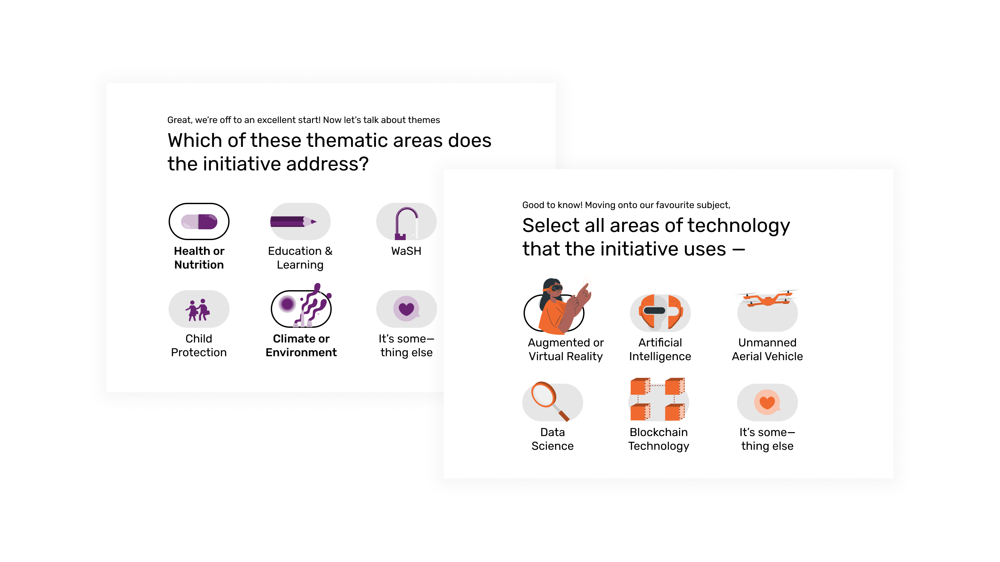
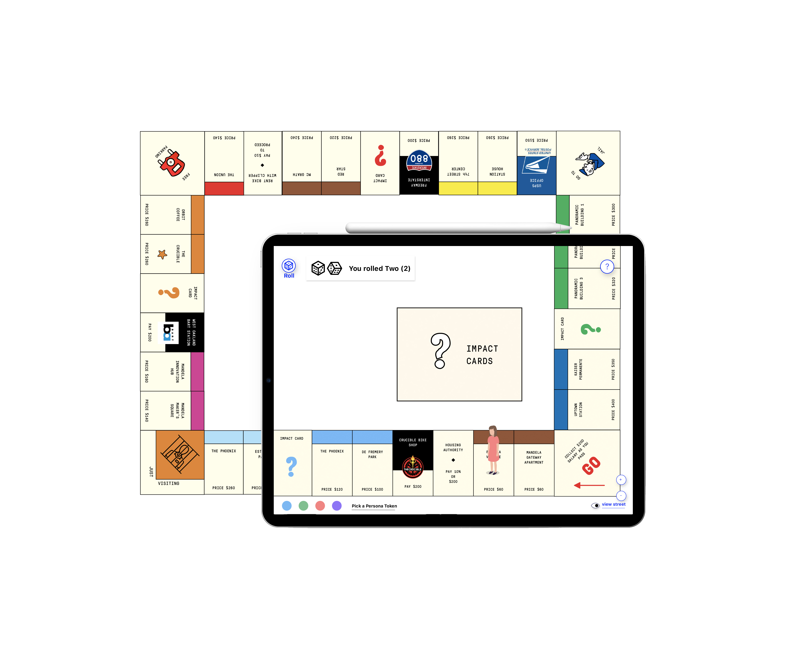
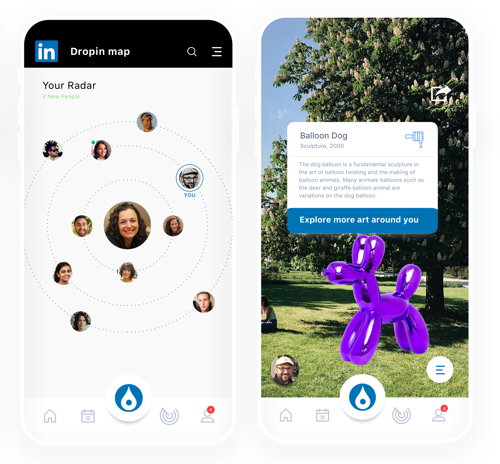
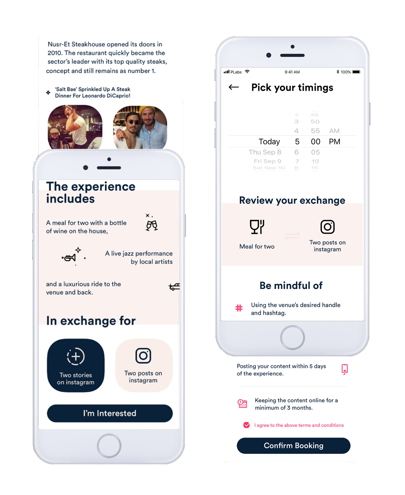
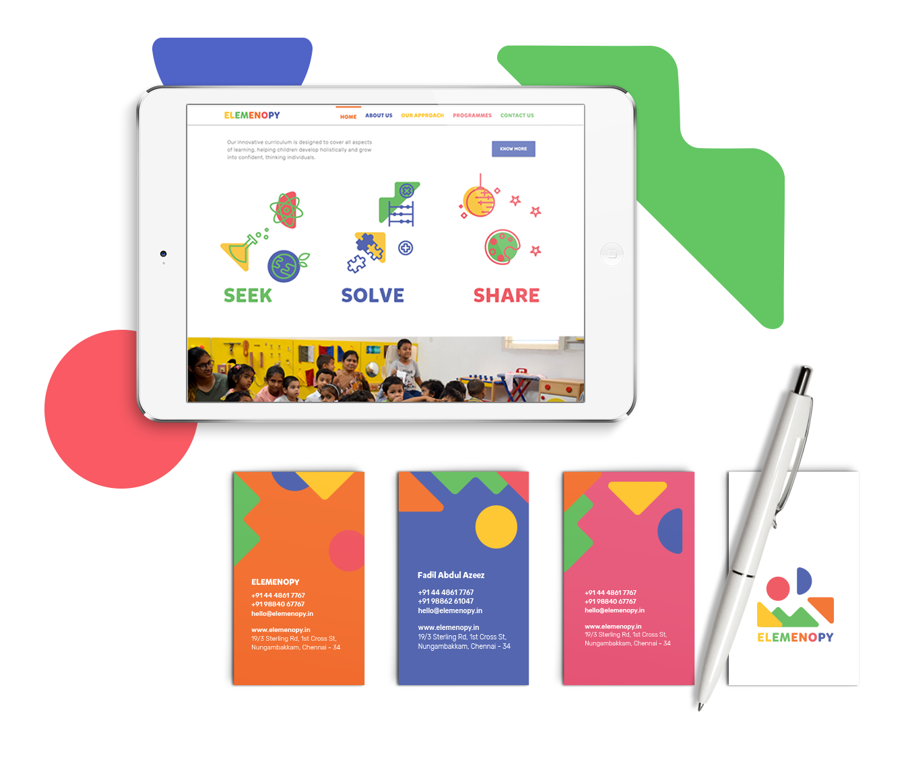

I'm a designer with an aptitude for analytical thinking and an appetite for play. Currently shaping tech for social impact at UNICEF Innovation, where I facilitate
design guidance
for solutions we build and invest in. I think of my practice as a way to bridge intention and outcome.
Previously, I was a designer at Salesforce in San Francisco — see some of that work in this
overview. With a background in graphic design, I've also crafted
brand identities and ads in the past. Find other curiosities and half-baked ideas on my corner of the internet.
Born in India, I'm currently based in Stockholm. To visualise the many places I've called home, I'm graphing my time across cities
here.
An alumnus of the National Institute of Design and California College of the Arts — see more on my C.V. or go through select
projects.

Designing a core point of interaction with the Venture Fund.
Design Sprint • UNICEF Office of Innovation (2023)

Designing a dashboard for tracking transactions.
Interface Design • UNICEF Office of Innovation (2024)

Co-creating a data-informed narrative about the future of a neighbourhood.
Information Design • The Crucible × CCA (2020)

Reimagining online networking for creative professionals.
UX Design • Student Project (2020)

Defining the exchange between influencers and venues through a mobile app.
Design Sprint • Parallel HQ (2018)

Designing a playful identity for early learning.
Brand Identity • Elemenopy Preschool (2017)